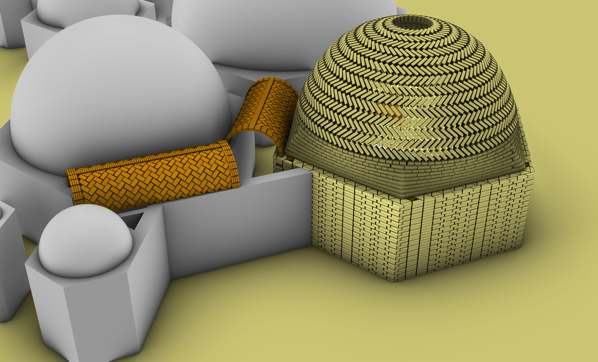
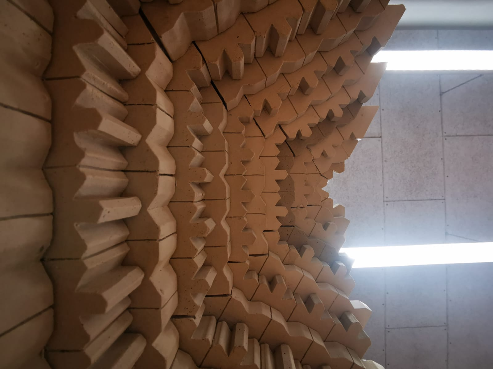
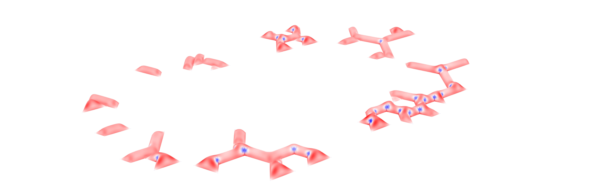
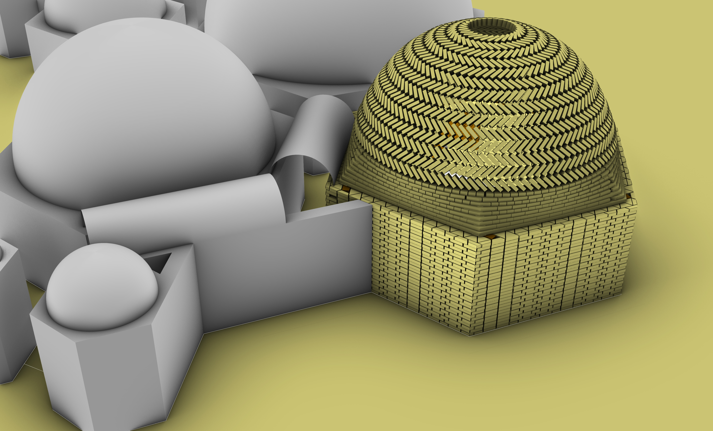

Corridors and Muqarnas:
The construction of the corridors and muqarnas
Sometimes pictures are too small for their quality, feel free to open them in a new tab

This chapter is mainly about the construction of the corridors and the muqarnas. As the design of the muqarnas is already described in 2_Forming, this chapter will only contain the construction of them. As the muqarnas are also used in the corridors, also the design of corridors and their construction is put in this chapter.
Muqarnas construction
As the dome is made out of muqarnas, first the elements has to be made. The muqarnas elements could be build using moulds. One large difference in construction is that these "adobe 2.0" elements arent particurally made by the people in the camp. This dome can be constructed with some simple tools and maybe a little larger foamwork. Because of this, this construction technique is not implemented, as it is not the purpose of the muqarna dome.
.jpg)
Fig. 1: The different foamworks
There are 4 different elements in shape. The only difference between these elements for each levels
are in their height .
.jpg)
Fig. 2: The resulting elements
First the moulds are built with the height of the biggest element. Then a piece of wood is placed with
the height needed for each level. This wood piece also could be used as a grip for when these are
moved to their places and for a bit of inter locking.
.jpg)
Fig. 3: Apply the foamwork with the wooden piece
.jpg)
Fig. 4: Fill the foamwork to get the elements
After putting the elements out of the mould after some time the not needed parts could be cut off.
To construct the dome, each row of the dome has to be complete first to go to the next one.
.jpg)
Fig. 5: Start placing the elements
After making three rows more clay has to be added to the back of the muqarnas to both make it
smooth and to make it more structurally stable.
.jpg)
Fig. 6: Apply the second roof each 3 rows to increase strength during building
And it has to be continued till the dome is finished.
.jpg)
Fig. 7: Final dome
In the process this has also been realised, giving a nice model muqarnas-dome.

Fig. 8: Model of the muqarnas dome
The corridors
In the ruleset the corridors are very important. In the beginnning a triangle is kept inbetween each hexagon to ensure the existing of corridors. The corridors became "less important" for a long time, as the focus was on the hexagons. Until an extensive calculation of the structural behaviour of these corridors there was not really a problem. Figure 8 shows the eventual calculations and they show that there is an necessity of looking better into the corridors. There is a lot of stress in the corners which might be dangerous for the building.

Fig. 9: Stresses in the vaults
This required another approach towards the corridors. The eventual result was that in stead of making complicated vaults, normal, rectangular vaults are created. They are easy to build and most likely a lot more sturdier. This leaves with a lot of asymmetrical connection pieces. These are very hard to build with normal bricks, so here also muqarnas are used.

Fig. 10: Rectangular vaults around the corridors
For the corridor junction and ending there are four different shape for muqarnas elements. They are made from the moulds just the way the dome elements are made.
.jpg)
Fig. 11: Different elements in the corridors
To make it structurally stable first the parts touching the corridor vaults has to be made. Then fill in the shape with the other elements.
.jpg)
Fig. 12: Eventual building of the corridors
Construction of the corridors
To make the corridors vaults first the shape has to be drawn on the ground by a rope then it is given at least a 10 cm thickness. Then workers have to make a mold using or rectangular bricks, and then make it smooth on inside using clay. After drying they place some straw and reeds inside and pour gypsum in the mold. This way we have our form work to make the corridor arches.
.jpg)
Fig. 13: Foamworks to create the arches
After that gypsum formworks are placed on their position on the wall. Two of them are placed for
every arches with 50 cm gap in between.
.jpg)
Fig. 14: Applying arches on the wall
Next they are bounded by ropes to prevent falling apart when we are placing bricks in between them.
.jpg)
Fig. 15: Binding arches
Then the arches are made. First the breaks are placed in between to make the structural arches and
then they are covered with bricks.
.jpg)
Fig. 16: Fill the structural arches
Then start placing bricks in between.
.jpg)
Fig. 17: Fill in the vault
And this is done for all other arches, but not for the joints and sharp corners. They are only made
rectangular to have lesser form works.
.jpg)
Fig. 18: All the rectangular vaults
Then for the joints they are made with muqarnas.
.jpg)
Fig. 19: Fill in with muqarnas
And also the sharp endings and corners are filled with muqarnas too.
.jpg)
Fig. 20: Also edges with muqarnas